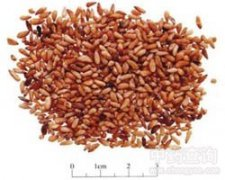

柏子仁

拼音
Bǎi Zǐ Rén
别名
柏实（《本经》），柏子、柏仁（《本草经集注》），侧柏子（《日华子本草》）。
来源
本品为柏科植物侧柏Platycladus orientalis （L.） Franco的干燥成熟种仁。秋、冬二季采收成熟种子，晒干，除去种皮，收集种仁。
生境分布
主产山东、河南、河北。此外，陕西、湖北、甘肃、云南等地亦产。
药材特点
常绿乔木，高达20m，胸径可达1m。树皮薄，浅灰褐色，纵裂成条片。小枝扁平，直展，排成一平面。叶鳞形，交互对生，长1-3mm，先端微钝，位于小枝上下两面之叶露出部分倒卵状菱形或斜方形，两侧的叶折覆着上下之叶的基部两侧，呈龙骨状。叶背中部均有腺槽。雌雄同株；球花单生于短枝顶端；雄球花黄色，卵圆形，长约2mm。球果当年成熟，卵圆形，长1.5-2cm,熟前肉质，蓝绿色，被白粉；熟后木质，张开，红褐色；种鳞4对，扁平，背部近先端有反曲的尖头，中部种鳞各有种子1-2颗。种子卵圆形或长卵形，长4-6mm，灰褐色或紫褐色，无翅或有棱脊，种脐大而明显。花期3-4月，球果9-11月成熟。
性状
本品呈长卵形或长椭圆形，长4～7mm，直径1.5～3mm。表面黄白色或淡黄棕色，外包膜质内种皮，顶端略尖，有深褐色的小点，基部钝圆。质软，富油性。气微香，味淡。
性味
甘，平。
功能主治
养心安神，止汗，润肠。用于虚烦失眠，心悸怔忡，阴虚盗汗，肠燥便秘。
用法用量
3～9g。
化学成分
种子含脂肪油约14％，并含少量挥发油、皂甙。
药理作用
1：柏子仁对前脑基底核破坏的小鼠被动回壁学习有改善作用
2：用电极热损伤环小鼠两侧前脑基底核：每日灌胃给予柏子仁乙醇提取物250mg/kg及500mg/kg,连续15d
3：在避暗法和跳台法试验中：均证明其对损伤造成的记忆再现障碍及记忆消去促进有明显的改善；对损伤致的获得障碍亦有改善倾向；对损伤造成的运动低下无拮抗作用
摘录
《中国药典》